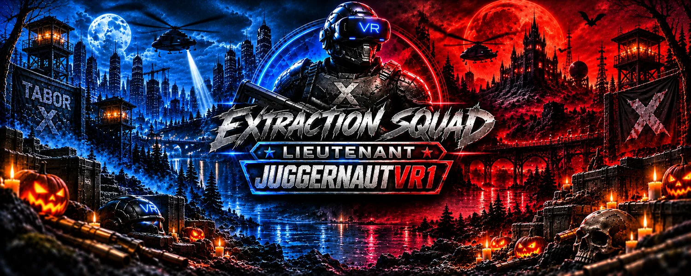
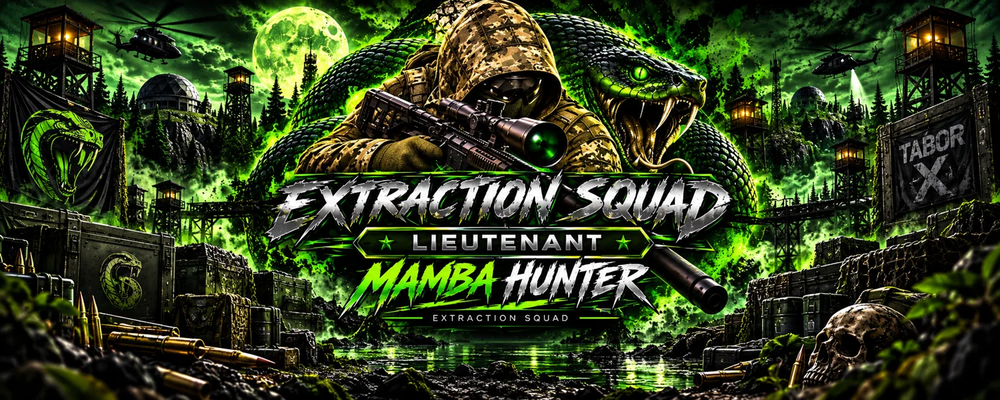
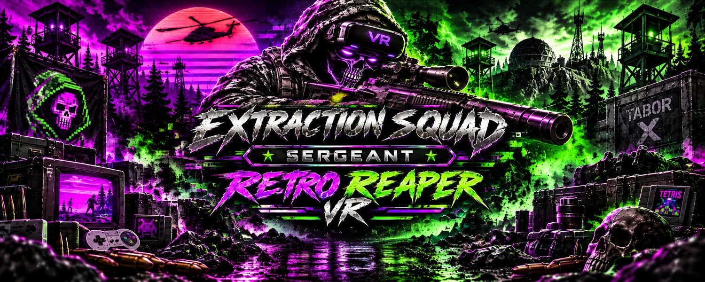
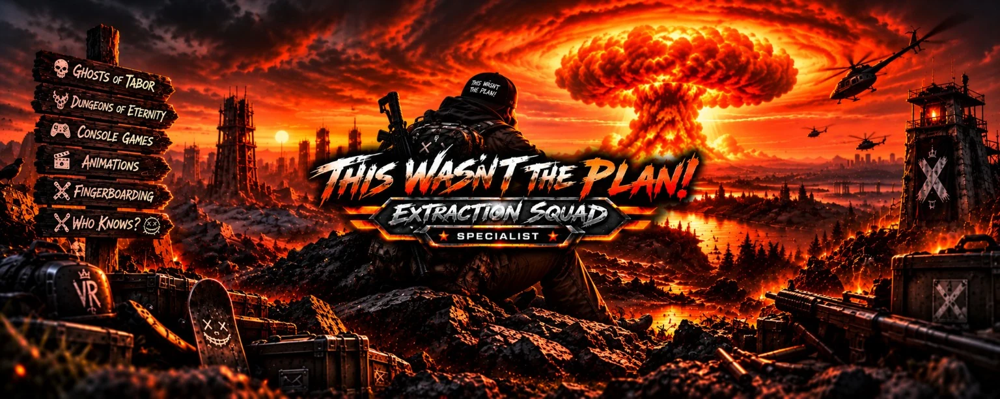

01
★ COMMANDER · FOUNDING BOARD
QUIET EXTRACTION
Stealth-focused Ghosts of Tabor PvE guides, loot routes, spawn intel and clean extractions.
VR GAMING · CREATOR & COMMUNITY SQUAD
Five core operators. One squad. Independent channels.
Independent creators. United in the extraction.
01 / PERSONNEL DATABASE
Five trusted squadmates. Four founding board members.
Select an operator to view their profile.
Stealth-focused Ghosts of Tabor PvE guides, loot routes, spawn intel and clean extractions.

02VR combat, survival and squad operations with long-shot specialty and a bold battlefield identity.

03A controlled chaos kind of operator with a semi tactical, semi comical identity.

04Retro arcade energy meets tactical VR combat with style.

05Unpredictable adventures across Ghosts of Tabor, Dungeons of Eternity, and console gaming. When the plan falls apart, the fun begins.
PERSONNEL DATABASE // COMMUNITY
Future community operators will be listed here by callsign and rank. Viewer raids and squad operations are open to the wider community.
02 / MISSION ARCHIVE
Video intel from across the squad.
Watch featured transmissions below.
LIVE OPERATIONS // WEEKLY SCHEDULE
Join the squad live. All schedules are subject to change.
HOST: JUGGERNAUTVR1
TIME: STARTS 5:30 PM EASTERN / 4:30 PM CENTRAL
Start time confirmed by Jugg. End time to be announced.
HOST: QUIET EXTRACTION
TIME: 2:00–6:00 PM EASTERN / 1:00–5:00 PM CENTRAL
Community viewer raids with a 10-minute midstream break.
03 / OUR DIRECTIVE
Extraction Squad unites VR operators, active creators, and emerging voices. Our five core operators form the reliable squad for raids and livestreams. The original four serve as the Founding Board; the Commander retains final decisions. Community operators join us for viewer raids and squad events.
Guides. Raids. Livestreams. Cooperative adventures. One place to find the entire squad.
04 / OPEN CHANNEL
Join the Extraction Squad community on Discord, and explore each operator’s YouTube channel through their roster profile.